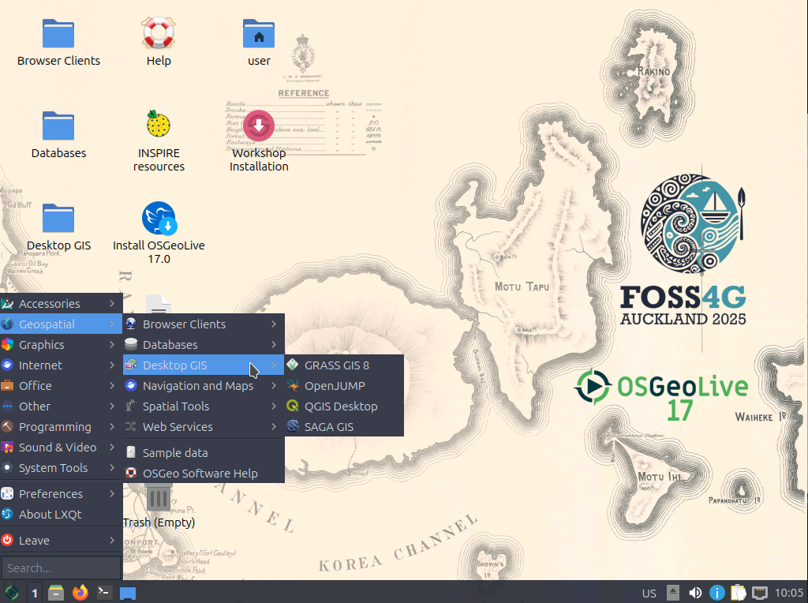
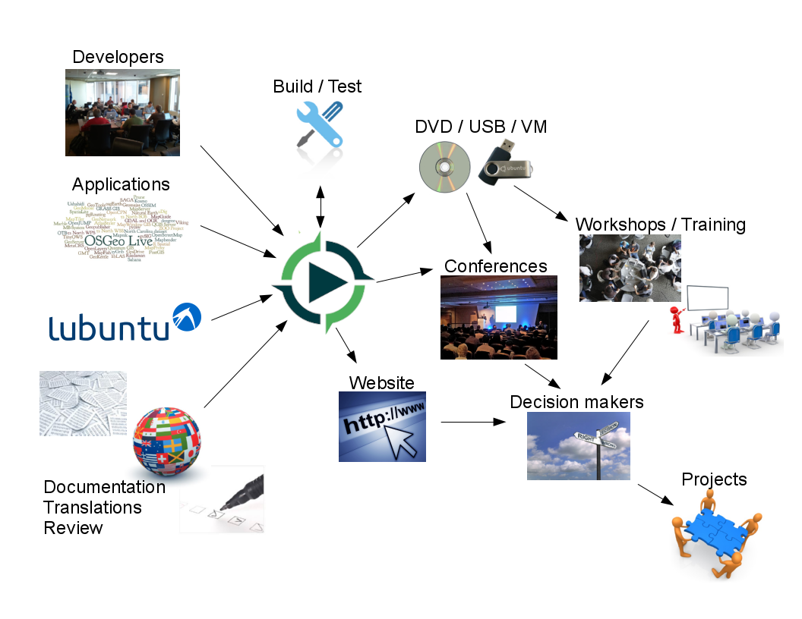
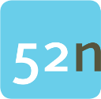
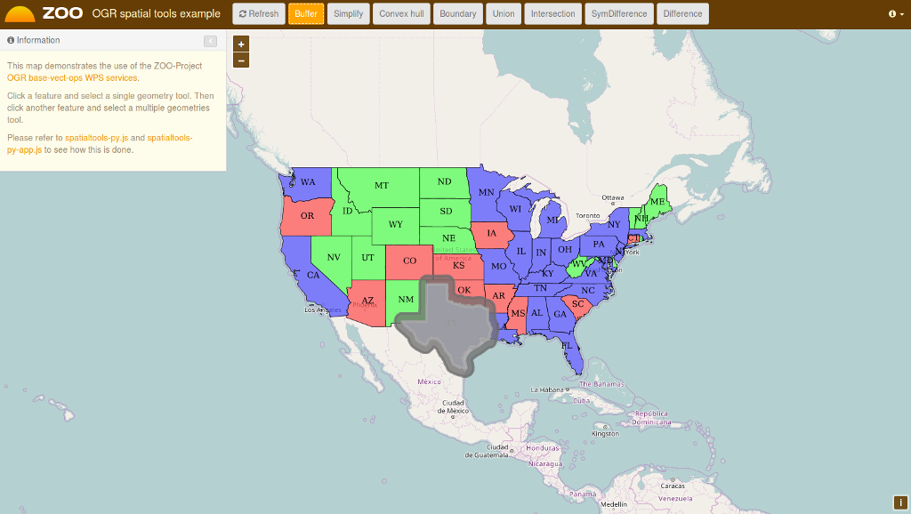
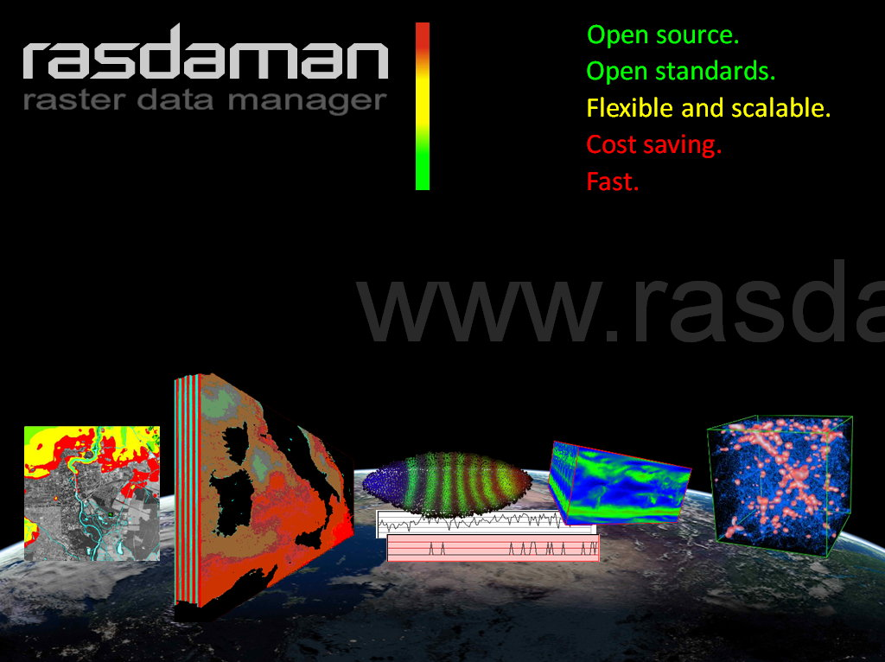
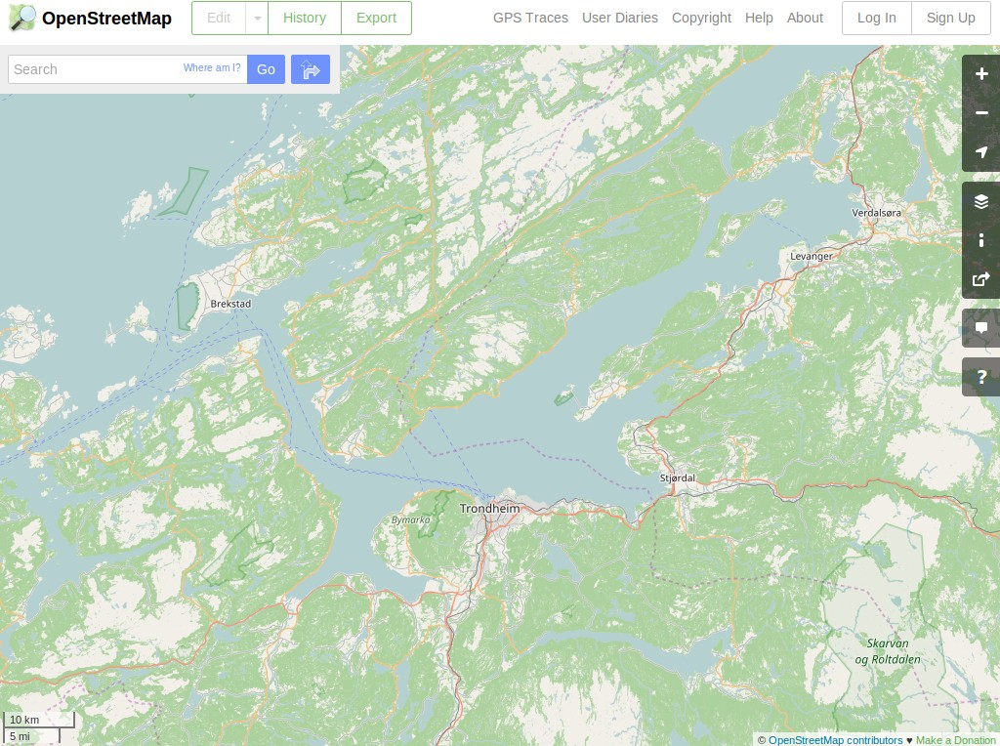
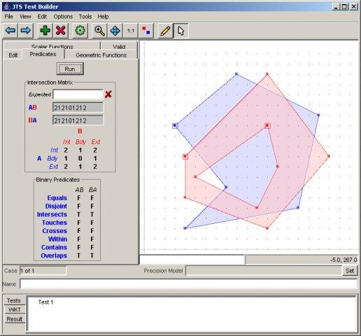

OSGeoLive
An Open Source Geospatial GNU/Linux Distribution

Press "s" for slide notes, ESC to zoom out, SPACE / arrow keys to navigate.
What is OSGeoLive?
- 50+ Open Source Geospatial Applications
- Sample Datasets
- Consistent Overviews & Quickstarts
- Translations
DVD / USB / Virtual Machine

Quality Criteria
- Established, stable, working software
- Active community
- https://live.osgeo.org/en/metrics.html
Production & Marketing Pipeline
Reboot for 11.0
- Reduced scope of OSGeoLive 11.0 release
- Reviewed all projects, focusing on quality of documentation
- Rebaselined to focus on leading applications
- Dropped:
- Windows-only applications/installers
- Overviews of OGC Standards
- Quickstarts of Libraries
- Some applications that did not meet our review criteria
- Only support a 64 bit distribution (32 bit is built but not officially supported)
What is new in 11.0
- Re-based to Lubuntu 16.04.2
- Updated core packages based on DebianGIS
- Major documentation updates
- Work being done to move translations to Transifex for 12.0
- Embraced OSGeo re-branding
- Full changelog
- Updated packages will soon land in UbuntuGIS
Open Source Geospatial
Foundation (OSGeo)
Non Profit for geospatial community, fostering:
- Free and Open Source Software
- Open Standards
- Open Education
- Open Research
- Open Data


OGC Standards
- Interoperability
- Future Proof
- Return on Investment

Desktop GIS
General GIS viewing, editing, and analysis on the desktop
| QGIS |
GRASS GIS |
gvSIG |
| uDig |
OpenJUMP |
SAGA |
QGIS - Desktop GIS

GRASS GIS

gvSIG - Desktop GIS

uDig: User-friendly Desktop Internet GIS

OpenJUMP GIS

SAGA - Desktop GIS

Browser Facing GIS
General GIS viewing, editing and analysis in the browser
| OpenLayers |
Leaflet |
Cesium |
GeoNode |
| Mapbender3 |
GeoMoose |
Geomajas |
OpenLayers - Browser Mapping Library

Leaflet - Mobile Friendly
Interactive Maps

Cesium - 3D globes and 2D maps in a browser

GeoNode - Geospatial CMS

Mapbender - Geoportal
Framework

GeoMoose - Web GIS Portal

Geomajas - Browser GIS Client

Web Services
Publishing spatial data to the internet
| GeoServer |
MapServer |
deegree |
ncWMS |
| EOxServer |
GeoNetwork |
pycsw |
MapProxy |
| QGIS Server |
istSOS |
52North WPS/SOS  |
Zoo Project |
GeoServer - Web Services

MapServer - Web Services

deegree - Web Services

ncWMS - Web Map Service

EOxServer - Web Coverage Service

GeoNetwork - Metadata
Catalogue

pycsw - Metadata Catalogue

MapProxy - Proxy WMS & tile services

QGIS Server - Web Map Service

istSOS - Sensor Observation Service

52°North SOS - Sensor
Observation Service

52°North WPS - Web
Processing Service

ZOO Project - Web Processing Service

Data Stores
Storing spatial data
| PostGIS |
SpatialLite |
| rasdaman |
pgRouting |
PostGIS - Spatial Database

SpatiaLite - Lightweight Database

Rasdaman - Multi-Dimensional Raster Database

pgRouting - routing for PostGIS

Navigation and Maps
| GpsPrune |
Marble |
OpenCPN |
| Open Street Map |
iD editor |
JOSM |
GpsPrune - View, Edit and
Convert GPS Tracks

Marble - Virtual Globe

OpenCPN - Marine GPS
Chartplotter

Open Street Map Tools

iD editor

JOSM

Spatial Tools
Specific analysis tools
| GMT |
ORFEO Toollbox |
R |
| Mapnik |
MapSlicer |
OSSIM |
GMT - Generic Mapping Tools

Orfeo Toolbox: Image
Processing

R - Statistical Programing

Mapnik - Cartographic
Rendering

MapSlicer - Create Map Tiles

OSSIM - Image Processing

Domain Specific GIS
Applications targeted at a specific domain
| zyGrib |
zyGrib - Weather Forecast Maps

Data
Spatial data sets
| Natural Earth |
Open Street Map |
| North Carolina |
netCDF |
Natural Earth - Global Data Sets

North Carolina educational dataset

OSM - Sample extract from OpenStreetMap

NetCDF - Time series
temperature and precipitation

Geospatial Libraries
| GDAL/OGR |
JTS |
GEOS |
| GeoTools |
Proj.4 |
libLAS |
GDAL/OGR - Geospatial Data Translation Tools

Java Topology Suite

GEOS - C/C++ Spatial Library

GeoTools

Proj.4

libLAS - LiDAR Data Access

Credits
Developers and Translators
Project Steering Committee: Angelos Tzotsos (chair), Brian Hamlin, Cameron Shorter, Alex Mandel, Johan Van de Wauw, Bas Couwenberg, Massimo De Stefano, Astrid Emde, Ben Caradoc-Davies, Nicolas Roelandt and Vicky Vergara.
Sponsors
| OSGeo |
UCD ICE |
|
| NTUA |
DebianGIS | okeanos |